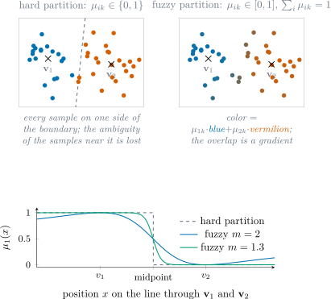
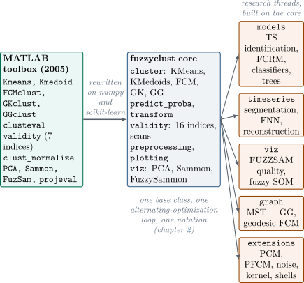
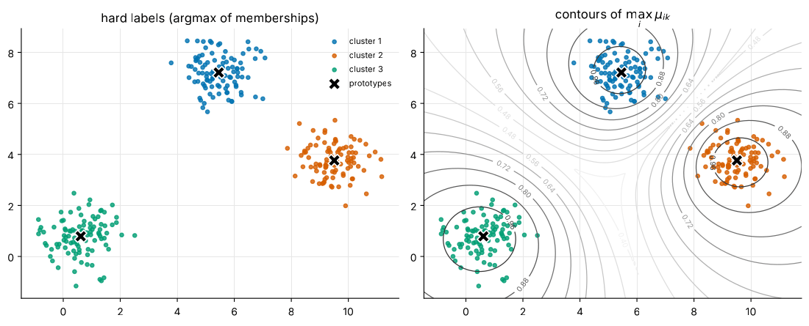

Chapter 1
Introduction
This chapter explains what clustering is good for, why fuzzy partitions are often the more honest description of data, and where the fuzzyclust toolbox comes from. The toolbox is the Python successor of the Fuzzy Clustering and Data Analysis Toolbox for MATLAB and puts two decades of clustering-based research of the author’s group (model identification, time-series analysis, visualization, and graph-based methods) and the classical methods of the literature behind one scikit-learn compatible interface. The chapter then describes how the book is organized and how to read it, and closes with the installation and a short first session. The mathematics starts in chapter 2.
1.1 What clustering is for
Cluster analysis groups objects by their mutual similarity: objects in the same group should resemble each other more than objects in different groups. It is unsupervised—no class labels are used—and this is its main asset. Where a classifier reproduces categories that somebody has already defined, clustering reveals a structure nobody has defined yet: the operating regimes of a chemical reactor, the types of customers behind a sales table, the segments of a long measured signal, the local linear behaviors of a nonlinear system. Ruspini [1], Dunn [2], and Bezdek [3] formulated fuzzy clustering as the minimization of an objective function, and the monographs by Bezdek [3], by Jain and Dubes [4], by Kaufman and Rousseeuw [5], and by Höppner et al. [6] remain the standard references.
In this book the objects are the rows of a data matrix ; the columns are measured variables (features). What the rows mean depends on the application, and so does the meaning of a cluster:
- In exploratory data analysis the rows are independent observations (patients, products, samples), and a cluster is a group of similar observations. The analyst wants to know how many groups there are, how they differ, and which observations lie between them.
- In pattern recognition and data reduction the prototypes of the clusters stand in for the data: a few hundred prototypes summarize a million samples, and the memberships of a new sample in the clusters serve as features for a subsequent classifier or regression model.
- In system identification the rows join a regression vector, built from lagged inputs and outputs of a dynamic system, with the corresponding output. A cluster in this product space is a region where one local linear model fits, and the fuzzy clustering of the product space yields a Takagi–Sugeno model with the memberships as rule firing strengths [7, 8]. Here clustering is not the end result but the structure-identification step of a model.
- In time-series analysis the rows are consecutive samples or delay vectors of a signal; a cluster is a segment with homogeneous behavior, and the memberships along time show when one regime gives way to the next.
The toolbox and the book cover all four uses. Chapters 2–4 develop the partitioning algorithms and their validation for the first two uses, chapter 8 the identification use, and chapter 9 the time-series use; the visualization and graph methods of chapters 5 and 7 serve all of them.
1.2 Hard and fuzzy partitions in one picture
A hard (crisp) partition assigns every sample to exactly one cluster; the clusters are disjoint subsets of the data. A fuzzy partition [1, 9] assigns every sample a membership degree in every cluster, with . Figure 1.1 shows why the second description is often the more faithful one. Two groups of points overlap. The hard partition (top left) draws a boundary and puts every sample on one side of it, although the samples near the boundary are no more similar to their own prototype than to the other one. The fuzzy partition (top right) preserves the degree of ambiguity of every sample. Along the line through the prototypes (bottom), the hard partition is a step function at the midpoint, whereas the fuzzy partition is a smooth membership function whose steepness is set by the fuzziness exponent of chapter 3.

Three practical consequences follow, and they are the reasons this book is about fuzzy clustering. First, the memberships carry information that a label cannot: the sample with memberships and the sample with receive the same hard label but mean different things, and a downstream model (a classifier, a local linear model, a monitoring rule) can use the difference. Second, the fuzzy objective function is differentiable in the memberships, which makes closed-form update equations and convergence proofs possible [10, 11]; hard partitions have to be searched combinatorially. Third, fuzzy prototypes are weighted means over all samples, so they move smoothly when the data change, which matters for identification and for tracking slowly drifting processes.
1.3 From the MATLAB toolbox to fuzzyclust
fuzzyclust descends from the Fuzzy Clustering and Data Analysis Toolbox for MATLAB of Balaskó, Abonyi, and Feil [12]. That toolbox implemented, in the notation of Babuška’s monograph [7], the hard k-means and k-medoids algorithms; the fuzzy c-means (FCM), Gustafson–Kessel (GK), and Gath–Geva (GG) algorithms; the evaluation of new data with fitted prototypes (clusteval); seven validity indices; data normalization; and three projection methods for the visualization of clustering results: principal component analysis, Sammon mapping, and the fuzzy Sammon mapping (FUZZSAM) of Kovács and Abonyi. It became the companion of the book Cluster Analysis for Data Mining and System Identification [8] and the basis of a line of research in which clustering is the engine of other tasks.
Figure 1.2 shows how the Python toolbox grew out of it. The core of the MATLAB toolbox maps one-to-one onto the sub-packages cluster, validity, preprocessing, plotting, and viz (chapter B gives the mapping function by function). Around this core, four research threads of the group are collected:
- Identification (fuzzyclust.models).
-
Takagi–Sugeno fuzzy models identified by clustering the product space of inputs and outputs with a modified Gath–Geva algorithm, fuzzy c-regression models, supervised fuzzy clustering for classification, fuzzy partitions for decision trees, and hinging-hyperplane trees.
- Time series (fuzzyclust.timeseries).
-
Fuzzy segmentation of multivariate time series by clustering with time as an extra dimension, model-order selection with false nearest neighbors and clustering, state-space reconstruction of chaotic systems, and structure selection for mixed-input models.
- Visualization (fuzzyclust.viz).
-
FUZZSAM and its quality measures, the fuzzy self-organizing map as a regularized FCM, and projection diagnostics for the number of clusters.
- Graph methods (fuzzyclust.graph).
-
Minimal-spanning-tree clustering with fuzzy hypervolume splitting and Gath–Geva refinement, and geodesic-distance fuzzy c-medoids on neighborhood graphs.
A fifth sub-package, fuzzyclust.extensions, adds classical variants that the MATLAB toolbox did not have: possibilistic c-means, noise clustering, kernel FCM, fuzzy c-varieties and c-shells, volume prototypes, and feature weighting. Eight further sub-packages take the methods beyond a complete numeric data matrix and a single unsupervised run: relational, incomplete, large, image, semisupervised, coclustering, collaborative, and ensemble (chapters 10 to 12).

Two design decisions shape the package. First, almost every clustering algorithm is a class derived from one base class that implements the alternating optimization once; an algorithm only defines how its prototypes are updated and how its distances are measured (chapter 2). Second, the estimators follow the scikit-learn conventions [13]: fit, predict, predict_proba, and transform behave as in scikit-learn; pipelines, cloning, grid search, and pickling work without extra code; and a pandas data frame is accepted as input and, on request, returned by transform. The MATLAB function clusteval, which evaluated new data with fitted prototypes, has become predict_proba.
1.4 How the book is organized
Chapter 2 lays the common ground: the data matrix; the distance norms; the hard, fuzzy, and possibilistic partition spaces; the objective-function view of clustering, with alternating optimization as the template of all algorithms; initialization, termination, and scaling; and the notation used throughout. It ends with the scikit-learn interface that the estimators of the toolbox share.
Chapter 3 presents the partitioning algorithms that carry the toolbox: k-means and k-medoids as hard reference methods; fuzzy c-means, with the derivation of its update equations and the role of the fuzziness exponent; the Gustafson–Kessel algorithm, with its adaptive norm, its volume constraint, and the covariance regularization of Babuška, van der Veen, and Kaymak; and the Gath–Geva algorithm, with its exponential distance, its priors, and its need for a good initialization. It closes with alternative fuzzifiers and with mountain and subtractive clustering, which estimate the number and location of the clusters.
Chapter 4 asks how many clusters there are. It describes the sixteen validity indices of the toolbox (partition-based, compactness and separation, crisp, and volume-based) with their optimum directions and weaknesses, the scan over the number of clusters, compatible cluster merging and stability-based selection as alternatives to the scan, and the evaluation of new data as a form of validation.
Chapter 5 puts a clustering on paper: principal component projection, Sammon mapping, the fuzzy Sammon mapping that preserves the sample–prototype distances of the algorithm, measures of projection quality, and the fuzzy self-organizing map.
Chapter 6 extends the prototype and the partition: possibilistic and noise clustering for data with outliers, kernel FCM, fuzzy c-varieties and c-shells for linear and circular clusters, volume prototypes, and feature weighting.
Chapter 7 abandons the prototype as the starting point: minimal-spanning-tree clustering with fuzzy hypervolume splitting and Gath–Geva refinement, and fuzzy c-medoids with geodesic distances on neighborhood graphs for clusters that follow a manifold.
Chapter 8 turns clustering into model identification: Takagi–Sugeno models from Gath–Geva clustering of the product space, fuzzy c-regression models, supervised fuzzy classifiers, fuzzy partitions for decision trees, and hinging-hyperplane trees.
Chapter 9 applies clustering to signals: fuzzy segmentation of multivariate time series, model-order selection by false nearest neighbors, state-space reconstruction of chaotic systems, and structure selection for models with mixed inputs.
Chapter 10 gives up the numeric feature vector: relational and NERF c-means work from a dissimilarity matrix alone, fuzzy c-medoids accepts any dissimilarity, and fuzzy k-modes and k-prototypes cluster categorical and mixed records.
Chapter 11 adapts fuzzy c-means to incomplete data, to very large data sets and streams, and to image segmentation, where the neighborhood of a pixel enters the objective function.
Chapter 12 goes beyond a single unsupervised run: partial supervision by class labels or pairwise constraints, co-clustering of objects and items, collaborative clustering across data sites, and fuzzy cluster ensembles.
Three appendices complete the book: a compact reference of every public class and function (chapter A), the migration table from the MATLAB toolbox (chapter B), and the catalog of example scripts (chapter C).
1.5 How to read this book
Every chapter has the same structure. A roadmap says what the chapter covers and how it connects to the previous one. Problem and idea motivates the methods in words and with one concept figure. Theory develops the methods in the unified notation, states every algorithm in an algorithm box, and closes with a summary box. Using it in fuzzyclust lists the parameters and attributes of the classes in API boxes, with code snippets taken verbatim from the example scripts. Examples discusses the figures that the example scripts produce, with emphasis on what happens when the main parameters change. Further reading points to the original papers. Theory and experiments are kept apart on purpose: the theory sections can be read without running anything, and the example sections can be run without reading the theory.
Notation at a glance
is the data matrix with samples as rows and features; is the number of clusters; is the prototype of cluster and the matrix of prototypes; is the membership of sample in cluster and the partition matrix; is the fuzziness exponent; is the squared distance of to in the norm of the algorithm; and is the objective. Index (and ) always runs over clusters, over samples. In code the partition is stored transposed as membership_ of shape (n_samples, n_clusters), in line with predict_proba. The full table is in table 2.1.
The figures that show computed results are produced by the example scripts in the examples/ directory of the repository (see the preface). The text names the script behind each such figure, and chapter C lists all scripts.
1.6 Installation and a first session
The package is installed from the Python Package Index with
pip install fuzzyclust
and depends only on numpy, scipy, scikit-learn, pandas, and matplotlib. A first session generates three Gaussian clusters, fits fuzzy c-means, and inspects the result:
import matplotlib.pyplot as plt from fuzzyclust import FCM from fuzzyclust.datasets import make_fuzzy_blobs from fuzzyclust.plotting import plot_clusters, plot_membership_contours X, y_true = make_fuzzy_blobs(n_clusters=3, n_samples_per_cluster=100, random_state=0) fcm = FCM(n_clusters=3, m=2.0, random_state=0).fit(X) print(fcm.cluster_centers_) # prototypes v_i, shape (3, 2) print(fcm.membership_[:5].round(3)) # memberships mu_ik of the first samples print(fcm.labels_[:5]) # hard labels, argmax of the memberships fig, axes = plt.subplots(1, 2, figsize=(11, 4.5)) plot_clusters(X, fcm.labels_, fcm.cluster_centers_, ax=axes[0]) plot_membership_contours(fcm, X, ax=axes[1]) plt.show()
The two central lines, which generate the data and fit the model, appear verbatim in the first example script, plot_01_fcm_basics.py:
X, y_true = make_fuzzy_blobs(n_clusters=3, n_samples_per_cluster=100, random_state=0) fcm = FCM(n_clusters=3, m=2.0, random_state=0).fit(X)
Figure 1.3 shows the result. The level curves of the maximal membership are nearly circular around the prototypes because fuzzy c-means measures every distance in the Euclidean norm. The MATLAB toolbox drew the same kind of map with clusteval, and in chapter 3 such maps show how differently the algorithms shape their clusters.

1.7 Further reading
The classical monograph on objective-function clustering is Bezdek’s [3]. Höppner, Klawonn, Kruse, and Runkler [6] cover the fuzzy algorithms, including shells and varieties; Jain and Dubes [4] and Kaufman and Rousseeuw [5] cover the hard and hierarchical methods. Babuška’s Fuzzy Modeling for Control [7] is the source of the notation of this book and a standard reference on clustering-based identification; Abonyi and Feil [8] collect the research threads that became the sub-packages of the toolbox. The MATLAB toolbox manual [12] documents the predecessor, and scikit-learn is described in [13]. Zadeh introduced fuzzy sets [9], Ruspini fuzzy partitions [1], and Dunn the fuzzy c-means functional [2].